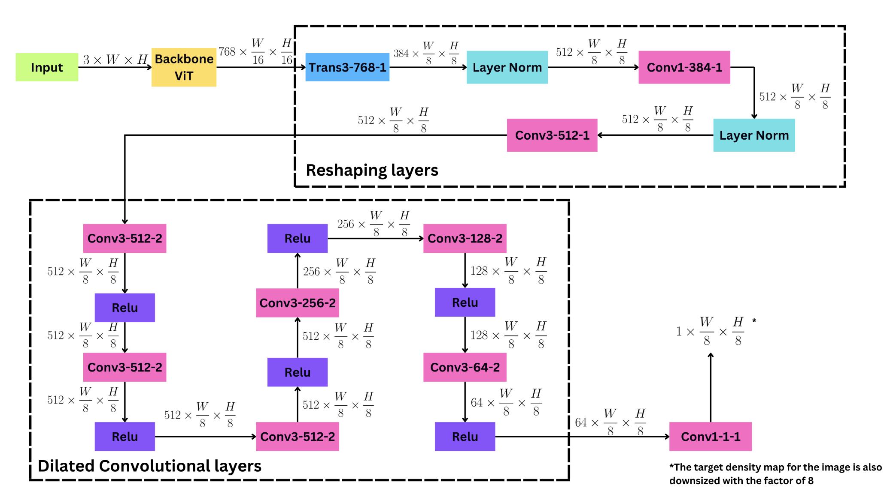
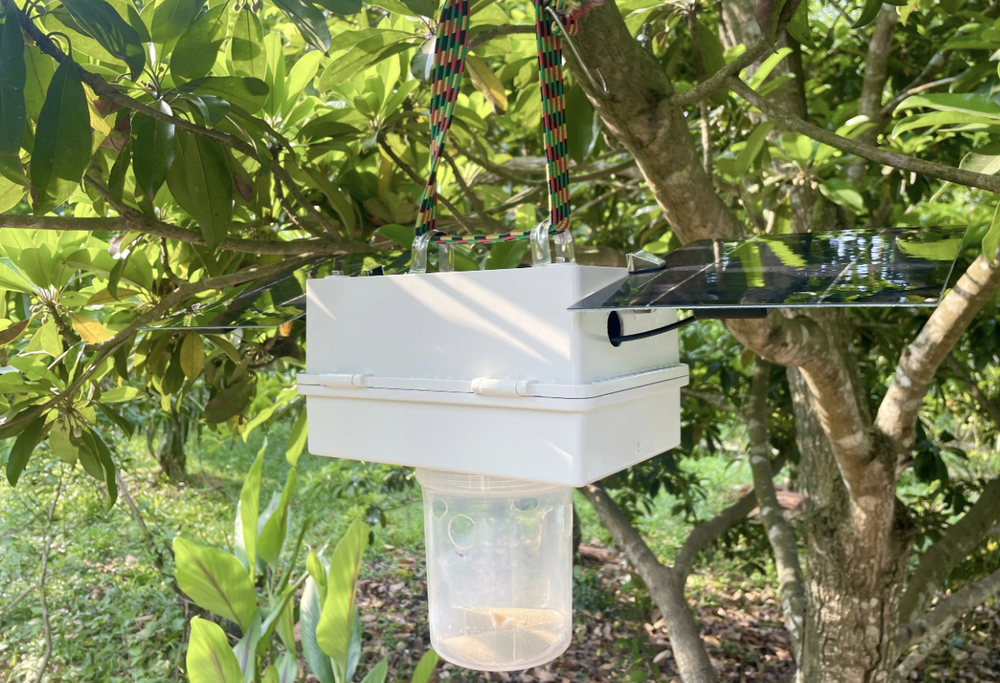

Anh-Duy Pham
Doctoral Researcher
Focus Areas
Technical Skills
About Me
I am a Doctoral Researcher at the Chair of Logistics and Quantitative Methods at the Julius-Maximilians-Universität Würzburg. My research is situated at the intersection of advanced machine learning and operations management.
Specifically, I focus on graph-based time series forecasting to enable data-driven decision-making in supply chain management. I combine this with expertise in Agent-based Modelling to simulate and analyze complex economic and environmental systems.
My academic background is rooted in Generative Deep Learning and Computer Vision, having developed novel deepfake autoencoders using StyleGAN and Vision Transformers during my Master's. I have previously applied these skills to biometrics and CAE simulations at various Fraunhofer institutes.
Experience & Education
Doctoral Researcher
Apr 2025 - PresentChair of Logistics and Quantitative Methods. Researching graph-based time series forecasting for supply chains.
PhD Student
Dec 2023 - Mar 2025Joint Lab Artificial Intelligence & Data Science.
Research Assistant & Master Student
2019 - 2023- M.Sc. Autonomous Systems, Hochschule Bonn-Rhein-Sieg (Focus: Generative AI).
- Research Assistant, Fraunhofer HHI (Biometrics).
- Research Assistant, Fraunhofer SCAI (ML for CAE Simulations).
- Research Assistant, Ruhr-Universität Bochum (Agent-based Economic Modeling).
Research & Teaching Assistant
Oct 2017 - Jul 2019Electrical Engineering and Information Technology department.
Recent Highlights
Selected Publications
View on Scholar
Evaluating climate-related financial policies' impact on decarbonization with machine learning methods
P D'Orazio, AD Pham

LimeSoDa: A dataset collection for benchmarking of machine learning regressors in digital soil mapping
J Schmidinger, S Vogel, V Barkov, AD Pham, R Gebbers, et al.

Expanding Vision in Tree Counting: Novel Ground Truth Generation and Deep Learning Model
MN Ton-That, TV Le, NH Truong, AD Le, AD Pham, HB Vo

TSEM: Temporally-Weighted Spatiotemporal Explainable Neural Network for Multivariate Time Series
AD Pham, A Kuestenmacher, PG Ploeger

SmartTrap: An On-Field Insect Monitoring System Empowered by Edge Computing Capabilities
QM Nguyen, DA Pham, DT Pham, AD Le, NQH Vo, HB Vo